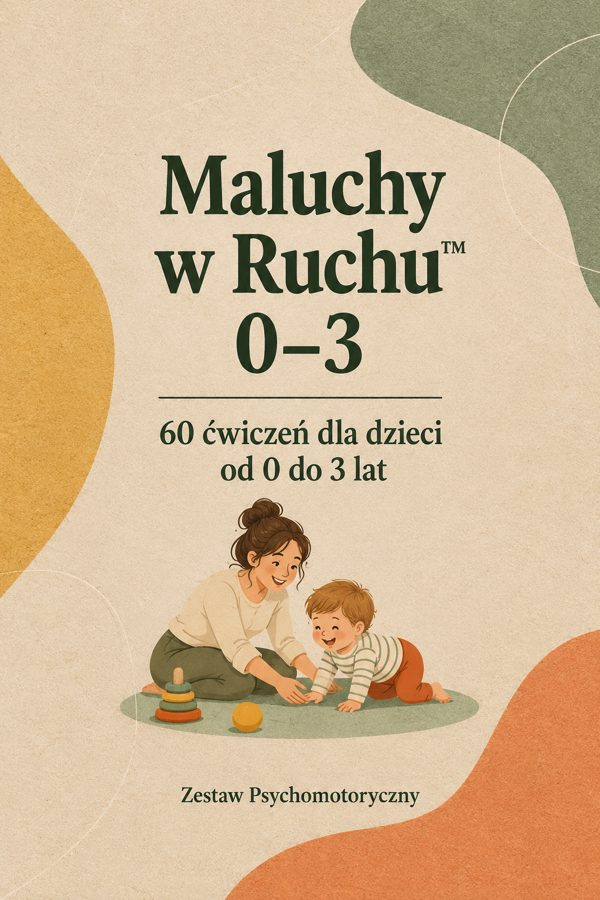

Zestaw główny
60 ćwiczeń dla dzieci 0–3 lata
60 ilustrowanych kart ćwiczeń w stylu zestawu, w trzech etapach: 0–12, 12–24 i 24–36 miesięcy.
Otwórz →Twoje bonusy
Bonus 1
Karty dla rodziców maluchów
20 prostych kart dla rodziców, do wręczenia po pierwszym spotkaniu.
Otwórz →Bonus 2Kamienie milowe ruchu
Orientacyjne kamienie milowe ruchu od 0 do 3 lat, ze źródłem.
Otwórz →BonusMini-tor dla malucha
Prosty tor z poduszek do zbudowania w domu. Bonus dla pierwszych 100 osób.
Otwórz →BonusPiosenki z ruchem
Bonus niespodzianka: 10 tradycyjnych rymowanek z ruchami.
Otwórz →Od czego zacząć
- Otwórz ćwiczenia dla wieku malucha, z którym pracujesz.
- Sprawdź jego wiek w «Kamieniach milowych ruchu».
- Wręcz rodzicom jedną «Kartę dla rodziców maluchów».
- Zbudujcie razem «Mini-tor dla malucha».
Do użytku osobistego. Zakaz odsprzedaży i rozpowszechniania.